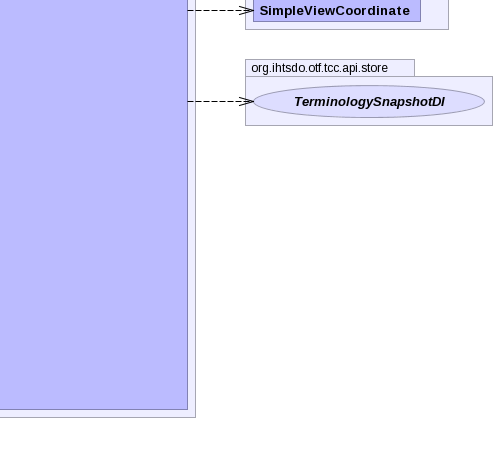

- java.lang.Object
-
- org.ihtsdo.otf.tcc.api.coordinate.ViewCoordinate
-
- All Implemented Interfaces:
- Externalizable, Serializable
public class ViewCoordinate extends Object implements Externalizable
- See Also:
- Serialized Form
-



-
-
Constructor Summary
Constructors Modifier Constructor and Description ViewCoordinate()ViewCoordinate(SimpleViewCoordinate another)ViewCoordinate(UUID vcUuid, String name, Precedence precedence, Position viewPosition, EnumSet<Status> allowedStatus, ContradictionManagerBI contradictionManager, int languageNid, int classifierNid, RelAssertionType relAssertionType, NidListBI langPrefList, LanguageSort langSort)ViewCoordinate(UUID vcUuid, String name, ViewCoordinate another)protectedViewCoordinate(ViewCoordinate another)
-
Method Summary
-
-
-
Constructor Detail
-
ViewCoordinate
public ViewCoordinate() throws ValidationException- Throws:
ValidationException
-
ViewCoordinate
public ViewCoordinate(SimpleViewCoordinate another) throws ValidationException
- Throws:
ValidationException
-
ViewCoordinate
protected ViewCoordinate(ViewCoordinate another)
-
ViewCoordinate
public ViewCoordinate(UUID vcUuid, String name, ViewCoordinate another)
-
ViewCoordinate
public ViewCoordinate(UUID vcUuid, String name, Precedence precedence, Position viewPosition, EnumSet<Status> allowedStatus, ContradictionManagerBI contradictionManager, int languageNid, int classifierNid, RelAssertionType relAssertionType, NidListBI langPrefList, LanguageSort langSort)
-
-
Method Detail
-
readExternal
public void readExternal(ObjectInput in) throws IOException, ClassNotFoundException
- Specified by:
readExternalin interfaceExternalizable- Throws:
IOExceptionClassNotFoundException
-
writeExternal
public void writeExternal(ObjectOutput out) throws IOException
- Specified by:
writeExternalin interfaceExternalizable- Throws:
IOException
-
getAllowedStatusAsString
public String[] getAllowedStatusAsString()
-
setAllowedStatusAsString
public void setAllowedStatusAsString(String[] statusStrings)
-
getClassifierNid
public int getClassifierNid()
-
getClassifierSpec
public ConceptSpec getClassifierSpec() throws IOException
- Throws:
IOException
-
setClassifierSpec
public void setClassifierSpec(ConceptSpec classifierSpec) throws IOException
- Throws:
IOException
-
getContradictionManager
public ContradictionManagerBI getContradictionManager()
-
setContradictionManager
public void setContradictionManager(ContradictionManagerBI contradictionManager)
-
getContradictionManagerPolicy
public ContradictionManagerPolicy getContradictionManagerPolicy()
-
setContradictionManagerPolicy
public final void setContradictionManagerPolicy(ContradictionManagerPolicy policy)
-
getIsaNid
public int getIsaNid()
-
getLangPrefList
public NidListBI getLangPrefList()
-
getLangPrefConceptSpecList
public List<ConceptSpec> getLangPrefConceptSpecList() throws IOException
- Throws:
IOException
-
setLangPrefConceptSpecList
public void setLangPrefConceptSpecList(List<ConceptSpec> langPrefSpecs) throws ValidationException, IOException
- Throws:
ValidationExceptionIOException
-
getLanguageSort
public LanguageSort getLanguageSort()
-
setLanguageSort
public void setLanguageSort(LanguageSort langSort)
-
getLanguageNid
public int getLanguageNid()
-
getLanguageSpec
public ConceptSpec getLanguageSpec() throws IOException
- Throws:
IOException
-
setLanguageSpec
public void setLanguageSpec(ConceptSpec languageSpec) throws IOException
- Throws:
IOException
-
getLastModSequence
public long getLastModSequence()
-
getName
public String getName()
-
setName
public void setName(String name)
-
getViewPosition
public Position getViewPosition()
-
getPrecedence
public Precedence getPrecedence()
-
getRelationshipAssertionType
public RelAssertionType getRelationshipAssertionType()
-
getVcUuid
public UUID getVcUuid()
-
setVcUuid
public void setVcUuid(UUID vcUuid)
-
getVcWithAllStatusValues
public ViewCoordinate getVcWithAllStatusValues()
-
setClassifierNid
public void setClassifierNid(int classifierNid)
-
setViewPosition
public void setViewPosition(Position viewPosition)
-
setPrecedence
public void setPrecedence(Precedence precedence)
-
setRelationshipAssertionType
public void setRelationshipAssertionType(RelAssertionType relAssertionType)
-
getSnapshot
public TerminologySnapshotDI getSnapshot()
-
getCachedSnapshot
public TerminologySnapshotDI getCachedSnapshot()
-
-